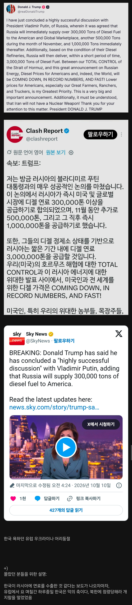

속보) 미국, 러시아로부터 디젤 연료 대량 수입 합의ㅋㅋㅋㅋ
댓글
우크라이나가 우리를 욕 함: 병신이 지랄한다는 생각 듦
우리가 했던 걸 트럼프가 함: 우리가 한 일이 되게 몹쓸 짓 같고 자괴감 듦

아차차

한국이 철면피 깔고 레드팀 하는구나 (X)
한국이 트럼프가 하는 짓거리랑 똑같은 짓을 하고 있구나 (O)

ㅋㅋㅋㅋㅋㅋㅋㅋㅋㅋㅋㅋㅋ
균형의 수호자 좆럼프ㅋㅋ
부끄러우세요?
근데 이거 ㄹㅇ임
나도 이 글 보면서 똑같이 느꼈다 시발.........
남한 북한 포함한 4대 악의축에서 미국까지 합류ㅋㅋㅋㅋㅋㅋㅋㅋㅋㅋㅋㅋㅋㅋㅋㅋㅋ 5대 악ㅋㅋㅋㅋㅋㅋㅋㅋㅋㅋ
Neo Red Team ㅋㅋㅋㅋㅋ
한국외교 실리주의 좆되긴하네 ㅋㅋㅋ
평소같았으면 좆럼프 친러 욕했을텐데 우리가 당한게 있으니 오히려 응원해주고싶네ㅋㅋ
저렴한 러시아 천연가스 없으면 유럽 난방비 5배 이벤트 열리니까
진짜 멍청한듯
트황은 언제나 젤렌스키가 지길 원하고 있어서 진심으로 패고 있었음
누가 이란 치라고 칼들고 협박함? ㅋㅋㅋㅋㅋ
아 jew인님이 시키긴 했구나
유럽놈들 지들도 러시아 한테 에너지 수입하고 있으면서 뺴액 하는거 킹받네
근데 그럼 뭐가 어케되는거임?
1. 한국이 러시아한테 디젤 판거 맞긴함?
2. 러시아 정유시설 공격받아서 디젤부족한거 아녔음? 어케 디젤 수출함?
그러게 ㅋㅋ우리한테는 사가고 다른데팔고??
항공유 사간건가 디젤은 넘쳐나고
일시적인 유통망 혼란으로 한국 경유도 사갔고
트럼프가 러시아 정유시설 공격 금지 하게 하고 정유시설도 복구 되어서 수출하는거라 보면 될듯
GPT한테 뉴스나 공식 의견 위주로 물어봤음
1. 한국 항구를 통해 러시아로 연료가 갔다는 건 사실인 것 같지만 한국 정부나 기업에서 팔았다는 증거는 없음
현재 조사중이라는 것 같음
2. 러시아는 지금 휘발유는 부족하지만 디젤은 본인들 주장으로는 여유가 좀 있는 상황이라고 함
- 10월 2일 러시아의 알렉산드르 노박 부총리는 러시아가 전통적으로 국내 소비량보다 많은 디젤을 생산해 왔으며,
공급 여력이 생기면 수출을 재개할 수 있다고 설명했습니다.
한국 정부가 무슨 의도를 갖고 러시아에 디젤을 판 게 아니라
한국에서 기름 사가면서 이 배는 일본 갈 건데요 하고 중간에 러시아로 가기
다른데로 가는 척 하고 바다에서 환적하기 이런 식으로 속인거임
그러니까 우리 입장에선 딱히 러시아에 판 적도 없고 양도 러시아 국내에서 하루~이틀이면 다 쓸
17만톤에 불과한데 아무튼 긴빠이당한 상황인데 그걸 가지고 유럽애들이
와 한국봐라! 러시아에 디젤을 공급했다! 전쟁물자! 나쁜놈들! 이러는건데
한국은 딱히 디젤이 대러 제재물품도 아니고 의도를 갖고 판 적도 없음
우리도 대러 제재물품 목록이 있음 공작기계, 산업용 기계, 전자제품, 차량, 건설중장비, 이차전지, 항공기 부품
이런 전쟁에 사용될 수 있는 물품은 제재함
근데 미국 유럽은 대놓고 러시아에서 석유 천연가스 수입하니까 우릴 욕하는 게 웃기게 보이는 거
우크라이라는 존나 속터지고 손 떨리겠노 ㅋㅋ
아~ 미국은 러시아한테서 기름을 뺐고 있는거라고 ㅋㅋㅋㅋ
내로남불이라고 할 수는 있지만, 국제 제재 관점에서 전혀 다른데...
러시아에 정제유 수출은 국제적으로 금지해놨음.
그 자체가 전략 자산이라 전쟁에 직접적으로 도움되는거라.
반면 가스 수입은 그런 품목이 아니고.
러시아에 돈 되는거 아니냐 하기에는,
애초에 대국가 제재가 러시아와 단교하고 모든 거래를 끊어라가 아니잖아.
~~한 것은 하지 말아라고, 그 중에 정제유(등 전략자산) 수출이 있는거지.
미국이 대중국 규제한다고 서로 옷 파는 것까지 금지하지는 않잖아.
그래픽 카드 못 팔게 하고, 반도체 생산 부품 못 팔게 하고 그렇지.
국제 제재 합의 관점에선 한국이 러시아에 정제유 수출한건 좀 수위가 다르긴 함.
비교하자면 무기 팔기 vs 옷 사기임.
옷 팔아서 돈 챙겨봐야 무기는 아무도 안 팔면 (전쟁에 대해서는) 의미가 있는건데,
한국이 거기서 국제 룰 깨고 무기 판 셈이니까 문제지.
근데 ㄹㅇ 국제 룰 깬거 맞음?
‘한국은 대러 제재에 동참하고 있고, 총 1402개 품목의 대러 수출을 막고 있습니다. 주로 산업 기계· 전자제품·차량 등 품목에 수출 통제가 집중돼 있지만, 정유는 빠져 있습니다. 즉 제재 위반은 아닌 겁니다. 다만 러우 전쟁 발발 직후 미국과 EU 등이 정제유를 수출 금지 품목으로 지정한 것과는 대조적입니다.’
국제적으로는 정제유 수출 금지 품목인데,
한국이 국내법에서는 정제유를 빼놨음.
그래서 국내법 위반은 아님.
국제적이다 보다는 EU중심이지
저새끼들도 웃긴게 수출입 금지하려다가
러시아 가스 없으면 우리 다 죽어 해서
수입은 단계적으로 줄이겠다 하잖아ㅋㅋㅋ
말로는 줄인다 해놓고 계속 수입량 늘리고
수출 역시도 헛소리에 가까운게
사실상 지들은 정제유 수출할 역량도 없으면서 허울뿐인 제재라고 생각함
아무리 그래도 미국•eu면 국제적 제재라고는 보는게 맞지 ㅋㅋㅋㅋㅋ
일본도 동참하고 있고.
사실상 우리 동맹국이라 할 국가는 전부 같이 하고 있음.
나도 내로남불이라고 하는건 그렇다 칠 수는 있다고 생각함.
그럼에도 불구하고 수위는 전혀 다르다는거고.
무기 팔기 vs 옷 사기 수준으로 층위가 다르니.
심지어 가디언 보도대로 국제 제재 대상인 러시아 선박이 한국항에 와서 정유 실고 간거면 어마어마한 문제고.
애초에 수입을 내로남불이라 하기도 어려운게,
우리는 뭐 러시아랑 수출•수입 안 하나.
애초에 국제 제재라는게 그 나라랑 단교•무역중단이 아닌데,
가스 사는거랑 정유 파는거랑 어떻게 동치가 되겠어.
우리나라가 글로벌 스탠다드를 상당히 잘 추종하는데
일본이야 뭐 원래 대러 관계가 안 좋은 국가고
미국은 지난달 들어서야 대러 에너지 수출 제재안 통과 시킴
그마저도 아직까지 시행 안된거라(10월 18일 시행)
이제까지 금지된 품목이 아니었어
네가 써둔것 레퍼런스 찾아보니 TV조선으로 나오는데
여기는 그냥 기자가 뇌피셜로 떠드는 개병신 언론사라 무시해도 됨
https://www.congress.gov/bill/119th-congress/house-bill/5334/text
The export, reexport, or in-country transfer to or in the Russian Federation of any energy or energy product produced in the United States.
이 법안 이전의 모든 행정명령에는 "수입금지"이지 "수출금지"는 아예 없음
그리고 HS코드 상으로 2710 계열의 석화제품들 찾아보면
우리는 전쟁 전부터 꾸준히 중국에 이어 두 번째로 많이 수출하고 있었는데
EU국가들은 애초에 핀란드 제외하면 수출량이 극히 적음
여기에 더불어 중동은 전후로도 상당한 정유제품을 러시아에 공급하는데
아무말 안하잖아?
단순히 너네는 수입하면서 수출한다고 내로남불이라는게 아니라
쟤네나 일본은 러시아에 수출을 얼마 안했으면서 수출금지 한거고
우리는 주요 수출국 중 하나였는데 수출금지 하라는거니깐 다르지
지네는 주요 수입국이었으니깐 수입금지 안하잖아
가디언 보도대로라고 해도 전혀 문제가 아님
한국 정부가 뭔 의도를 갖고 러시아에 디젤 공급한 게 아니라
러시아가 공해에서 환적하고 목적지 속이고 일본간다하고 받아가는 등
한국 입장에선 러시아에 긴빠이 당한거 아님?
거기다 7월 8월 두 달 동안 17만 톤이라는데
러시아 국내 디젤 소모가 하루에 12만~15만 톤이라고 함
두달 동안 하루 반나절어치 긴빠이해간 걸 가지고 핏대세워서 욕하는게 이상함
그럴거면 아예 지들은 수입을 막던가
ㅈ크라야 어서 미국 욕해봐라
이런 거 보면 국운 같은 게 진짜 있는 거 같어 ㅋㅋㅋ
우크라야 그거해봐
유럽은 러시아 가스 존나 쓰는중 아님?
ㄱㅊ 유럽도 러시아한테서 연료 존나 사감 걍 병신들이 병신짓 하고있는거임 뻔뻔한것들